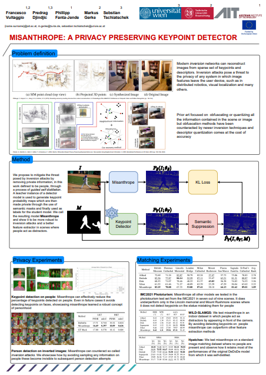
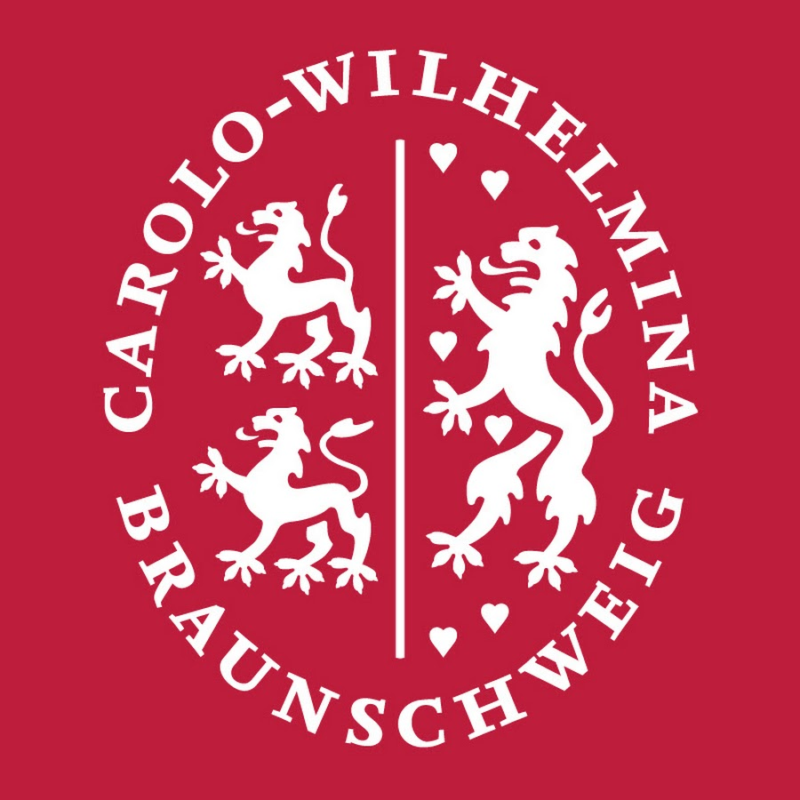
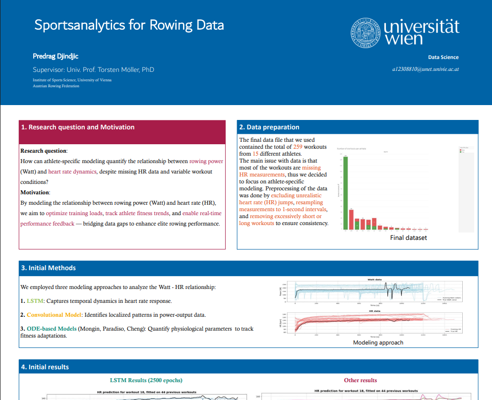

Specializing in deep learning and computer vision, with experience across the full stack — data pipelines, model training, and production systems.
CNNs, transformers, and custom architectures — built and trained from scratch.
Research and applied work in image matching, detection, and visual perception.
End-to-end pipelines — from raw data to a model that runs in production.
RAG pipelines, LLM integration, and applied language understanding.
Reproducible experiments, clean pipelines, and reliable deployment workflows.
Full-cycle deep learning research on sparse feature extraction for visual localization - from architecture design and training to benchmark evaluation and deployment.
Contributed feature development and maintenance to AdInsure, a large-scale enterprise insurance platform deployed across European markets.
Supported genomic data analysis using computational and statistical methods, and contributed to an open-source bioinformatics web platform.
Specializing in deep learning, computer vision, and mathematical optimization. Thesis research conducted at the Austrian Institute of Technology on sparse feature extraction for visual localization.
Grounded in algorithms, systems, and software engineering, with supporting coursework in statistics, linear algebra, and optimization. This mathematical foundation shaped a natural progression toward machine learning and data science.
1st place at Dragonhack 2023. A low-cost, plug-and-play safety system that brings real-time drowsiness detection and collision warnings to any vehicle — no specialized hardware required.
Finalist at AIM Hackathon 2024. A RAG pipeline built on GPT-4o that ingests 146 corporate sustainability PDFs and answers structured ESG queries — extracting and comparing environmental, social, and governance scores across companies at scale.
More projects on the way — check back soon or visit my GitHub for the latest work.

Vultaggio, F., Djindjic, P., Fanta-Jende, P., Gerke, M., Tschiatschek, S.
Inversion attacks can reconstruct images from sparse keypoints and descriptors, exposing private information in distributed vision systems. Misanthrope mitigates this via guided self-distillation — a teacher model's keypoint maps are semantically masked to suppress detections on people, training a student model that learns to ignore them entirely.
Results
🏆 7/9 scenes on IMC2021 Best MRE/MTE on WILD-SLAMGS ↓ mIoU 0.744 → 0.397 under inversionIn Collaboration With

TU Braunschweig
Djindjic, P. — Supervised by Univ. Prof. Torsten Möller, PhD
Athlete-specific modeling of the relationship between rowing power (Watts) and HR dynamics across 259 workouts from 15 elite rowers. Combines LSTM, convolutional models, and ODE-based physiological models to predict HR response and track longitudinal fitness adaptations — despite significant missing HR data.
Improvements over baseline
HR prediction error: 3.8 bpm ↓ from ~7.5 bpm HR response fit: R² = 0.84 ↑ from 0.51 Athlete-specific vs. global model: ~38% error reduction Tau tracking precision: ±0.2s vs. untrackedIn Collaboration With